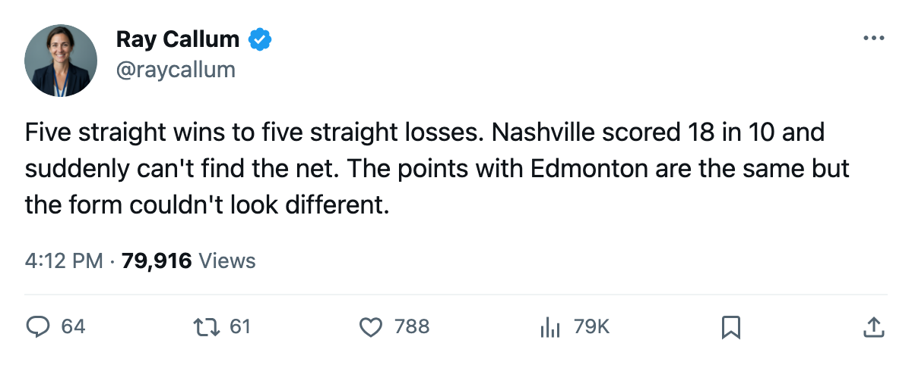

Numbers Game: Edmonton and Nashville are tied at 84 points, and only one of them is winning
Nashville went 5 and 0 and then 0 and 5. The Oilers are 3 straight and closing on the tiebreaker
 Ray CallumSenior correspondent · Home Ice Network
Ray CallumSenior correspondent · Home Ice Network Nashville Predators has 35 wins, 19 losses, 6 overtime losses, and 84 points.
Nashville Predators has 35 wins, 19 losses, 6 overtime losses, and 84 points.  Edmonton Oilers has 26 wins, 19 losses, 8 overtime losses, and 84 points. The tiebreaker is wins. Nashville holds 4th in the West, Edmonton 5th. The only thing separating them is a number that gets smaller every night Nashville loses.
Edmonton Oilers has 26 wins, 19 losses, 8 overtime losses, and 84 points. The tiebreaker is wins. Nashville holds 4th in the West, Edmonton 5th. The only thing separating them is a number that gets smaller every night Nashville loses.
The Predators won 5 straight through mid-February. They have lost 5 straight since. Their last 10 games: 18 goals for, 20 against. Compare that to the season pace of 214 goals in 64 games.
Vernon Fiddler75 went down with a groin between February 28 and March 2. He's out until May 12, which means the season. Fiddler plays center on the third line and kills penalties. His absence thins the middle of the lineup, and that wear adds up over a stretch this long.
The lineup shows the scramble.  Chris Gratton80 moved up from 42C to the third-line center slot.
Chris Gratton80 moved up from 42C to the third-line center slot.  Greg Johnson81 went undressed before and now dresses on the fourth line and the second power play unit.
Greg Johnson81 went undressed before and now dresses on the fourth line and the second power play unit.  Adam Hall76 jumped from K2C to K1C.
Adam Hall76 jumped from K2C to K1C.
Edmonton's 3-game run closes the gap
Edmonton Oilers beat  Columbus Blue Jackets 4-2 on March 1 and sits on a 3-game win streak. They have 17 games left, Nashville 18. If the Oilers win their remaining games, their ceiling is 118 points. Nashville's is 120. But Edmonton has 84 points right now with the better recent form. Nashville's 5-game losing streak means their next win could come against
Columbus Blue Jackets 4-2 on March 1 and sits on a 3-game win streak. They have 17 games left, Nashville 18. If the Oilers win their remaining games, their ceiling is 118 points. Nashville's is 120. But Edmonton has 84 points right now with the better recent form. Nashville's 5-game losing streak means their next win could come against  San Jose Sharks tonight, a team with 60 points that has won 1.
San Jose Sharks tonight, a team with 60 points that has won 1.
The 5th seed holds a playoff spot. If Edmonton ties them again, the Oilers take the position on wins the next time it counts, which could be as soon as next week if Nashville loses and Edmonton wins.
| club | GP | pts | streak | left |
|---|---|---|---|---|
| NSH | 64 | 84 | L5 | 18 |
| EDM | 65 | 84 | W3 | 17 |
Tonight the Predators visit San Jose, 20-30-10, 13-19 at home. The Sharks are on a 1-game win streak. This is as soft a matchup as Nashville will find in the next two weeks. If they can't find a goal against this blue line, the tie with Edmonton won't hold.
